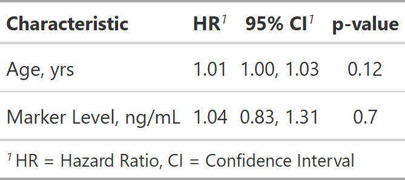
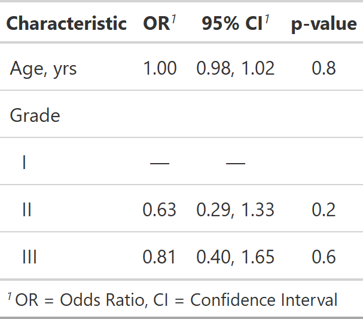
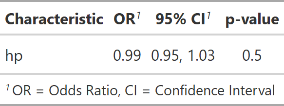

This function takes a regression model object and returns a formatted table that is publication-ready. The function is highly customizable allowing the user to obtain a bespoke summary table of the regression model results. Review the tbl_regression vignette for detailed examples.
tbl_regression( x, label = NULL, exponentiate = FALSE, include = everything(), show_single_row = NULL, conf.level = NULL, intercept = FALSE, estimate_fun = NULL, pvalue_fun = NULL, tidy_fun = NULL, show_yesno = NULL, exclude = NULL )
| x | Regression model object |
|---|---|
| label | List of formulas specifying variables labels,
e.g. |
| exponentiate | Logical indicating whether to exponentiate the
coefficient estimates. Default is |
| include | Variables to include in output. Input may be a vector of
quoted variable names, unquoted variable names, or tidyselect select helper
functions. Default is |
| show_single_row | By default categorical variables are printed on multiple rows. If a variable is dichotomous (e.g. Yes/No) and you wish to print the regression coefficient on a single row, include the variable name(s) here--quoted and unquoted variable name accepted. |
| conf.level | Must be strictly greater than 0 and less than 1. Defaults to 0.95, which corresponds to a 95 percent confidence interval. |
| intercept | Logical argument indicating whether to include the intercept
in the output. Default is |
| estimate_fun | Function to round and format coefficient estimates. Default is style_sigfig when the coefficients are not transformed, and style_ratio when the coefficients have been exponentiated. |
| pvalue_fun | Function to round and format p-values.
Default is style_pvalue.
The function must have a numeric vector input (the numeric, exact p-value),
and return a string that is the rounded/formatted p-value (e.g.
|
| tidy_fun | Option to specify a particular tidier function if the
model is not a vetted model or you need to implement a
custom method. Default is |
| show_yesno | DEPRECATED |
| exclude | DEPRECATED |
A tbl_regression object
If you prefer to consistently use a different function to format p-values or estimates, you can set options in the script or in the user- or project-level startup file, '.Rprofile'. The default confidence level can also be set.
The N reported in the output is the number of observations
in the data frame model.frame(x). Depending on the model input, this N
may represent different quantities. In most cases, it is the number of people or
units in your model. Here are some common exceptions.
Survival regression models including time dependent covariates.
Random- or mixed-effects regression models with clustered data.
GEE regression models with clustered data.
This list is not exhaustive, and care should be taken for each number reported.
Example 1

Example 2

Example 3

See tbl_regression vignette for detailed examples
Other tbl_regression tools:
add_global_p.tbl_regression(),
add_nevent.tbl_regression(),
add_q(),
bold_italicize_labels_levels,
combine_terms(),
inline_text.tbl_regression(),
modify_header(),
tbl_merge(),
tbl_stack()
library(survival) tbl_regression_ex1 <- coxph(Surv(ttdeath, death) ~ age + marker, trial) %>% tbl_regression(exponentiate = TRUE) tbl_regression_ex2 <- glm(response ~ age + grade, trial, family = binomial(link = "logit")) %>% tbl_regression(exponentiate = TRUE) library(lme4)#>#> #> #> #> #> #>tbl_regression_ex3 <- glmer(am ~ hp + (1 | gear), mtcars, family = binomial) %>% tbl_regression(exponentiate = TRUE)#> #> #> #> #> #> #> #> #> #> #> #> #> #># for convenience, you can also pass named lists to any arguments # that accept formulas (e.g label, etc.) glm(response ~ age + grade, trial, family = binomial(link = "logit")) %>% tbl_regression(exponentiate = TRUE, label = list(age = "Patient Age"))#> <style>html { #> font-family: -apple-system, BlinkMacSystemFont, 'Segoe UI', Roboto, Oxygen, Ubuntu, Cantarell, 'Helvetica Neue', 'Fira Sans', 'Droid Sans', Arial, sans-serif; #> } #> #> #mwlefoodfi .gt_table { #> display: table; #> border-collapse: collapse; #> margin-left: auto; #> margin-right: auto; #> color: #333333; #> font-size: 16px; #> background-color: #FFFFFF; #> width: auto; #> border-top-style: solid; #> border-top-width: 2px; #> border-top-color: #A8A8A8; #> border-right-style: none; #> border-right-width: 2px; #> border-right-color: #D3D3D3; #> border-bottom-style: solid; #> border-bottom-width: 2px; #> border-bottom-color: #A8A8A8; #> border-left-style: none; #> border-left-width: 2px; #> border-left-color: #D3D3D3; #> } #> #> #mwlefoodfi .gt_heading { #> background-color: #FFFFFF; #> text-align: center; #> border-bottom-color: #FFFFFF; #> border-left-style: none; #> border-left-width: 1px; #> border-left-color: #D3D3D3; #> border-right-style: none; #> border-right-width: 1px; #> border-right-color: #D3D3D3; #> } #> #> #mwlefoodfi .gt_title { #> color: #333333; #> font-size: 125%; #> font-weight: initial; #> padding-top: 4px; #> padding-bottom: 4px; #> border-bottom-color: #FFFFFF; #> border-bottom-width: 0; #> } #> #> #mwlefoodfi .gt_subtitle { #> color: #333333; #> font-size: 85%; #> font-weight: initial; #> padding-top: 0; #> padding-bottom: 4px; #> border-top-color: #FFFFFF; #> border-top-width: 0; #> } #> #> #mwlefoodfi .gt_bottom_border { #> border-bottom-style: solid; #> border-bottom-width: 2px; #> border-bottom-color: #D3D3D3; #> } #> #> #mwlefoodfi .gt_col_headings { #> border-top-style: solid; #> border-top-width: 2px; #> border-top-color: #D3D3D3; #> border-bottom-style: solid; #> border-bottom-width: 2px; #> border-bottom-color: #D3D3D3; #> border-left-style: none; #> border-left-width: 1px; #> border-left-color: #D3D3D3; #> border-right-style: none; #> border-right-width: 1px; #> border-right-color: #D3D3D3; #> } #> #> #mwlefoodfi .gt_col_heading { #> color: #333333; #> background-color: #FFFFFF; #> font-size: 100%; #> font-weight: normal; #> text-transform: inherit; #> border-left-style: none; #> border-left-width: 1px; #> border-left-color: #D3D3D3; #> border-right-style: none; #> border-right-width: 1px; #> border-right-color: #D3D3D3; #> vertical-align: bottom; #> padding-top: 5px; #> padding-bottom: 6px; #> padding-left: 5px; #> padding-right: 5px; #> overflow-x: hidden; #> } #> #> #mwlefoodfi .gt_column_spanner_outer { #> color: #333333; #> background-color: #FFFFFF; #> font-size: 100%; #> font-weight: normal; #> text-transform: inherit; #> padding-top: 0; #> padding-bottom: 0; #> padding-left: 4px; #> padding-right: 4px; #> } #> #> #mwlefoodfi .gt_column_spanner_outer:first-child { #> padding-left: 0; #> } #> #> #mwlefoodfi .gt_column_spanner_outer:last-child { #> padding-right: 0; #> } #> #> #mwlefoodfi .gt_column_spanner { #> border-bottom-style: solid; #> border-bottom-width: 2px; #> border-bottom-color: #D3D3D3; #> vertical-align: bottom; #> padding-top: 5px; #> padding-bottom: 6px; #> overflow-x: hidden; #> display: inline-block; #> width: 100%; #> } #> #> #mwlefoodfi .gt_group_heading { #> padding: 8px; #> color: #333333; #> background-color: #FFFFFF; #> font-size: 100%; #> font-weight: initial; #> text-transform: inherit; #> border-top-style: solid; #> border-top-width: 2px; #> border-top-color: #D3D3D3; #> border-bottom-style: solid; #> border-bottom-width: 2px; #> border-bottom-color: #D3D3D3; #> border-left-style: none; #> border-left-width: 1px; #> border-left-color: #D3D3D3; #> border-right-style: none; #> border-right-width: 1px; #> border-right-color: #D3D3D3; #> vertical-align: middle; #> } #> #> #mwlefoodfi .gt_empty_group_heading { #> padding: 0.5px; #> color: #333333; #> background-color: #FFFFFF; #> font-size: 100%; #> font-weight: initial; #> border-top-style: solid; #> border-top-width: 2px; #> border-top-color: #D3D3D3; #> border-bottom-style: solid; #> border-bottom-width: 2px; #> border-bottom-color: #D3D3D3; #> vertical-align: middle; #> } #> #> #mwlefoodfi .gt_striped { #> background-color: rgba(128, 128, 128, 0.05); #> } #> #> #mwlefoodfi .gt_from_md > :first-child { #> margin-top: 0; #> } #> #> #mwlefoodfi .gt_from_md > :last-child { #> margin-bottom: 0; #> } #> #> #mwlefoodfi .gt_row { #> padding-top: 8px; #> padding-bottom: 8px; #> padding-left: 5px; #> padding-right: 5px; #> margin: 10px; #> border-top-style: solid; #> border-top-width: 1px; #> border-top-color: #D3D3D3; #> border-left-style: none; #> border-left-width: 1px; #> border-left-color: #D3D3D3; #> border-right-style: none; #> border-right-width: 1px; #> border-right-color: #D3D3D3; #> vertical-align: middle; #> overflow-x: hidden; #> } #> #> #mwlefoodfi .gt_stub { #> color: #333333; #> background-color: #FFFFFF; #> font-size: 100%; #> font-weight: initial; #> text-transform: inherit; #> border-right-style: solid; #> border-right-width: 2px; #> border-right-color: #D3D3D3; #> padding-left: 12px; #> } #> #> #mwlefoodfi .gt_summary_row { #> color: #333333; #> background-color: #FFFFFF; #> text-transform: inherit; #> padding-top: 8px; #> padding-bottom: 8px; #> padding-left: 5px; #> padding-right: 5px; #> } #> #> #mwlefoodfi .gt_first_summary_row { #> padding-top: 8px; #> padding-bottom: 8px; #> padding-left: 5px; #> padding-right: 5px; #> border-top-style: solid; #> border-top-width: 2px; #> border-top-color: #D3D3D3; #> } #> #> #mwlefoodfi .gt_grand_summary_row { #> color: #333333; #> background-color: #FFFFFF; #> text-transform: inherit; #> padding-top: 8px; #> padding-bottom: 8px; #> padding-left: 5px; #> padding-right: 5px; #> } #> #> #mwlefoodfi .gt_first_grand_summary_row { #> padding-top: 8px; #> padding-bottom: 8px; #> padding-left: 5px; #> padding-right: 5px; #> border-top-style: double; #> border-top-width: 6px; #> border-top-color: #D3D3D3; #> } #> #> #mwlefoodfi .gt_table_body { #> border-top-style: solid; #> border-top-width: 2px; #> border-top-color: #D3D3D3; #> border-bottom-style: solid; #> border-bottom-width: 2px; #> border-bottom-color: #D3D3D3; #> } #> #> #mwlefoodfi .gt_footnotes { #> color: #333333; #> background-color: #FFFFFF; #> border-bottom-style: none; #> border-bottom-width: 2px; #> border-bottom-color: #D3D3D3; #> border-left-style: none; #> border-left-width: 2px; #> border-left-color: #D3D3D3; #> border-right-style: none; #> border-right-width: 2px; #> border-right-color: #D3D3D3; #> } #> #> #mwlefoodfi .gt_footnote { #> margin: 0px; #> font-size: 90%; #> padding: 4px; #> } #> #> #mwlefoodfi .gt_sourcenotes { #> color: #333333; #> background-color: #FFFFFF; #> border-bottom-style: none; #> border-bottom-width: 2px; #> border-bottom-color: #D3D3D3; #> border-left-style: none; #> border-left-width: 2px; #> border-left-color: #D3D3D3; #> border-right-style: none; #> border-right-width: 2px; #> border-right-color: #D3D3D3; #> } #> #> #mwlefoodfi .gt_sourcenote { #> font-size: 90%; #> padding: 4px; #> } #> #> #mwlefoodfi .gt_left { #> text-align: left; #> } #> #> #mwlefoodfi .gt_center { #> text-align: center; #> } #> #> #mwlefoodfi .gt_right { #> text-align: right; #> font-variant-numeric: tabular-nums; #> } #> #> #mwlefoodfi .gt_font_normal { #> font-weight: normal; #> } #> #> #mwlefoodfi .gt_font_bold { #> font-weight: bold; #> } #> #> #mwlefoodfi .gt_font_italic { #> font-style: italic; #> } #> #> #mwlefoodfi .gt_super { #> font-size: 65%; #> } #> #> #mwlefoodfi .gt_footnote_marks { #> font-style: italic; #> font-size: 65%; #> } #> </style> #> <div id="mwlefoodfi" style="overflow-x:auto;overflow-y:auto;width:auto;height:auto;"><table class="gt_table"> #> #> <thead class="gt_col_headings"> #> <tr> #> <th class="gt_col_heading gt_columns_bottom_border gt_left" rowspan="1" colspan="1"><strong>Characteristic</strong></th> #> <th class="gt_col_heading gt_columns_bottom_border gt_center" rowspan="1" colspan="1"><strong>OR</strong><sup class="gt_footnote_marks">1</sup></th> #> <th class="gt_col_heading gt_columns_bottom_border gt_center" rowspan="1" colspan="1"><strong>95% CI</strong><sup class="gt_footnote_marks">1</sup></th> #> <th class="gt_col_heading gt_columns_bottom_border gt_center" rowspan="1" colspan="1"><strong>p-value</strong></th> #> </tr> #> </thead> #> <tbody class="gt_table_body"> #> <tr> #> <td class="gt_row gt_left">Patient Age</td> #> <td class="gt_row gt_center">1.02</td> #> <td class="gt_row gt_center">1.00, 1.04</td> #> <td class="gt_row gt_center">0.10</td> #> </tr> #> <tr> #> <td class="gt_row gt_left">Grade</td> #> <td class="gt_row gt_center"></td> #> <td class="gt_row gt_center"></td> #> <td class="gt_row gt_center"></td> #> </tr> #> <tr> #> <td class="gt_row gt_left" style="text-align: left; text-indent: 10px;">I</td> #> <td class="gt_row gt_center">—</td> #> <td class="gt_row gt_center">—</td> #> <td class="gt_row gt_center"></td> #> </tr> #> <tr> #> <td class="gt_row gt_left" style="text-align: left; text-indent: 10px;">II</td> #> <td class="gt_row gt_center">0.85</td> #> <td class="gt_row gt_center">0.39, 1.85</td> #> <td class="gt_row gt_center">0.7</td> #> </tr> #> <tr> #> <td class="gt_row gt_left" style="text-align: left; text-indent: 10px;">III</td> #> <td class="gt_row gt_center">1.01</td> #> <td class="gt_row gt_center">0.47, 2.16</td> #> <td class="gt_row gt_center">>0.9</td> #> </tr> #> </tbody> #> #> <tfoot> #> <tr class="gt_footnotes"> #> <td colspan="4"> #> <p class="gt_footnote"> #> <sup class="gt_footnote_marks"> #> <em>1</em> #> </sup> #> #> OR = Odds Ratio, CI = Confidence Interval #> <br /> #> </p> #> </td> #> </tr> #> </tfoot> #> </table></div>